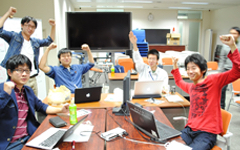
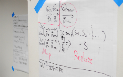
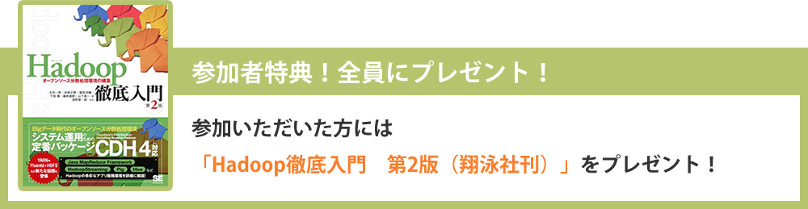

幅広い分野のビッグデータを扱える！
Hadoopプログラミングの講義を受けて、新しい・面白いアプリを開発しよう！
-
１Hadoopを学ぼう
参加者はHadoopを用いたビッグデータ解析技術の講義を受けて、アプリケーション開発に必要な知識を学べます！
なお、本コンテストは文部科学省の教育プロジェクトenPiT(*)のクラウド分野(**)の講義でもあり、東京大学と東京工業大学の学生は単位を取得できます。
-
２チームで開発しよう
本コンテストは大学間の交流を促すことも目的の一つです。所属が異なるメンバーとチームを組んで、新しいアプリケーションを開発しよう！
2014年度は東京大学、東京工業大学、電気通信大学、筑波大学、早稲田大学、奈良先端技術大学院大学などから受講生が集まり、大学間の垣根を超えてアプリケーション開発に挑戦しました！
-
３現場のビッグデータに触れよう
普段閲覧できないようなリアルなビッグデータを解析できます。
楽天株式会社、ヤフー株式会社、株式会社サイバーエージェント、株式会社ドワンゴ、株式会社リクルートテクノロジーズからデータ提供予定！
-
４現場のエンジニアと交流しよう
現場の最前線で活躍するエンジニアがメンターとして参加し、各開発チームの技術的課題の解決だけでなく、現場の運用などを聞けるチャンスがあります。
また、最終日の成果発表では、協賛企業のエンジニアから現場視点の貴重なフィードバックが貰えます！
初日でHadoopプログラミングの講義（座学）を実施
3日間でビッグデータを活用するアプリケーション開発
| 日付 | 8/28 (金)* | 9/13 (日) | 9/14 (月) | 9/16 (水) | 9/17 (木) | 9/18 (金) |
|---|---|---|---|---|---|---|
| 午前 | なし | 概要説明 チーム組み |
協賛企業のショートセッション ＆メンタリング アプリ開発 |
協賛企業のショートセッション ＆メンタリング アプリ開発 |
協賛企業のショートセッション ＆メンタリング アプリ開発 |
成果発表会 |
| ランチ | なし | 自由行動 | 自由行動 | 自由行動 | 自由行動 | 自由行動 |
| 午後 | 18:00-20:30 ★参加任意★ データセットの説明 事前課題の説明 （軽食提供） |
Hadoopの講義 | 協賛企業のショートセッション ＆メンタリング アプリ開発 |
協賛企業のショートセッション ＆メンタリング アプリ開発 |
協賛企業のショートセッション ＆メンタリング アプリ開発 |
成果発表会 審査結果公表 表彰・企業賞贈呈 プチ懇親会 |
5日間のカリキュラムの他にも
事前課題や協賛される企業の独自勉強会に参加することが可能です。
・*事前（8/28(金)）に任意参加のプレイベント（データセット説明やネットワーキングなど）を開催します。
・講義前に事前課題を告知します。また、任意の事前学習（映像教材）も用意しています。
・イベント後に希望する協賛企業が勉強会を開催（別途用意するSlackで告知）します。
坂本一憲（国立情報学研究所 助教）
ソフトウェアテスト、複数言語対応ソースコード解析・変形が専門。プログラミング言語、ゲーミフィケーション、競技プログラミングが好き。ゲームAIプログラミングコンテストを毎年開催しています！（CEDEC、ACM ICPC JavaChallenge、情報処理学会 SamurAI Codingなど）主催。IPA 未踏ユース2010採択、スーパークリエイター認定。
当日講師・審査員としてご参加頂く企業様
- グーグル株式会社
- 楽天株式会社
- 株式会社フリークアウト
- ヤフー株式会社
- 株式会社サイバーエージェント
- エキサイト株式会社
- 株式会社ドワンゴ
- 株式会社富士通研究所
- 株式会社SEプラス
- 開催日
- 9/13・14・16・17・18の5日間
- 開催時間
- 9:30-17:00
- 場所
- 国立情報学研究所 12階 1208-1210室
東京都千代田区一ツ橋2-1-2（詳細） - 最寄り駅
- 東京メトロ半蔵門線／都営地下鉄三田線・新宿線
「神保町」A9出口
東京メトロ東西線「竹橋」1b出口
徒歩5分 - 参加対象者
- 大学院生 (『クラウドアプリケーション開発演習』受講者は単位認定 / 未受講の学生も参加可能)
- 参加条件
- Javaプログラミングができる
Linuxの基本的な操作ができる
※Gitなどのバージョン管理システムが利用できると開発がスムースになります。 - 持ち物
- ノートPC / 筆記用具 / 学生証
※会場で電源と無線LANを用意していますが、ご自身で有線LANケーブルを準備頂くと、より快適になります。 - 注意事項
- 講義として受講する方も申込フォームからご応募下さい。応募多数の場合、単位の認定資格のある方と修士学生の方を優先して、抽選を行います。(9/7申込締切)
